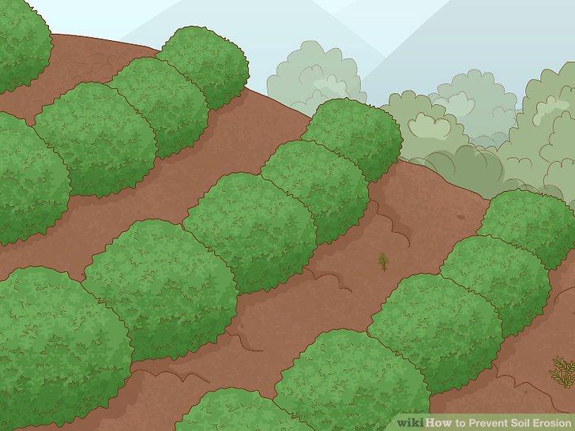
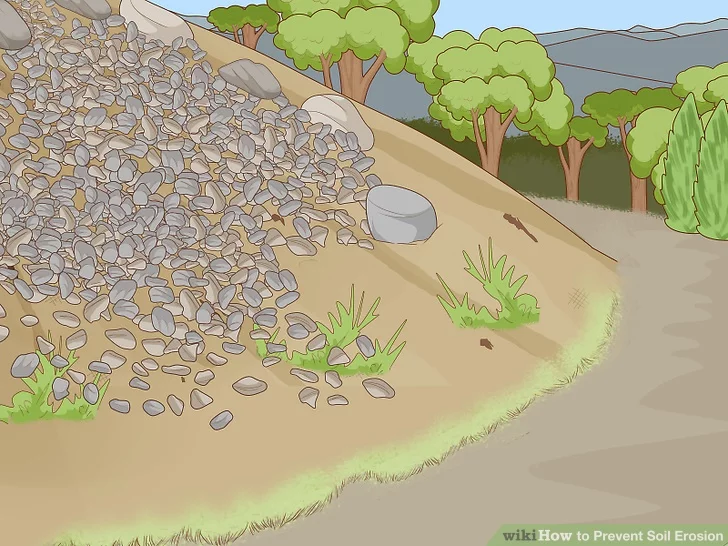
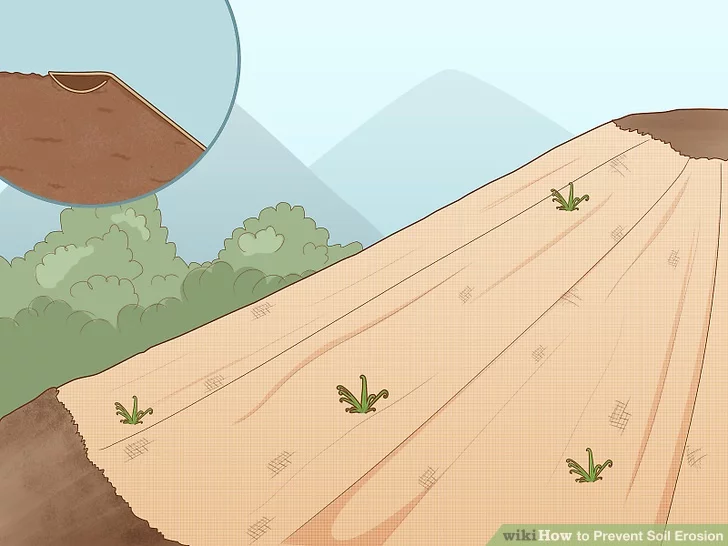
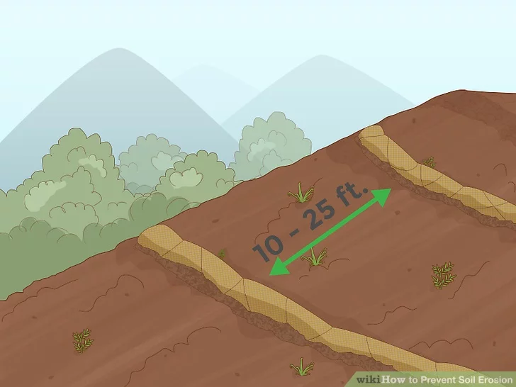
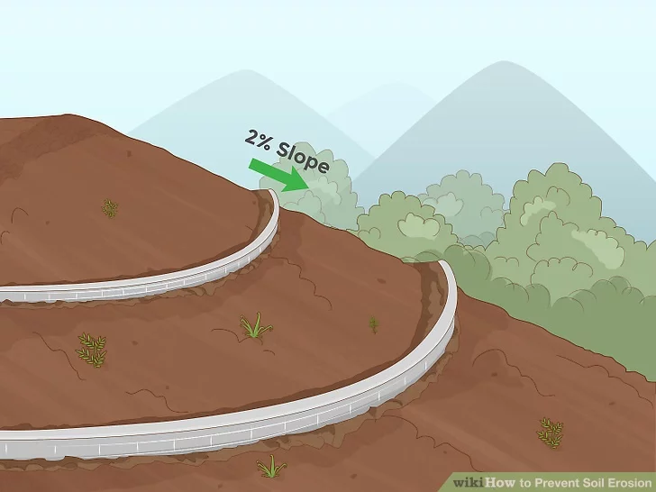
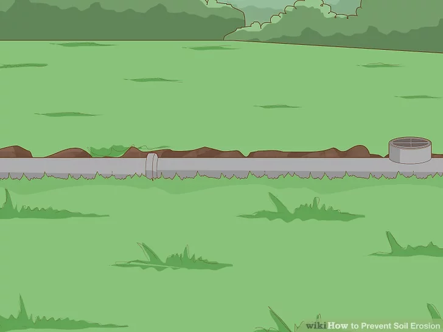
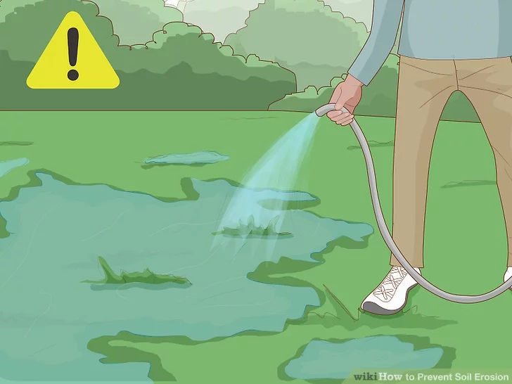
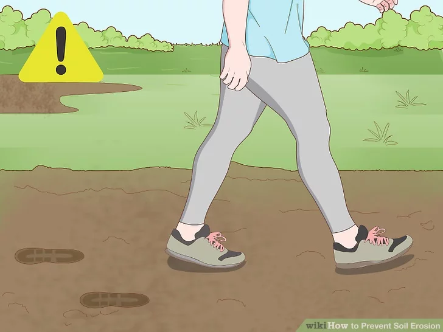
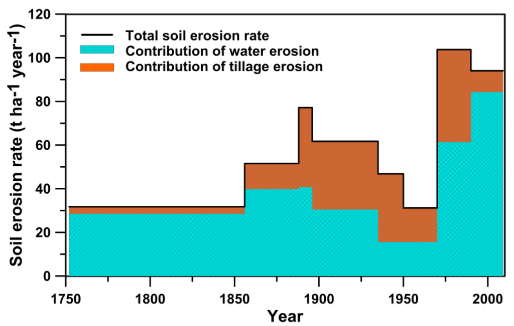
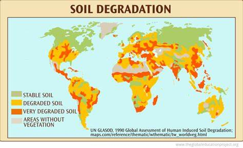

WHAT IS SOIL EROSION?
Soil erosion is the natural process in which the topsoil of a field is carried away by physical sources such as wind and water. In this process, soil particles become loosened or washed away, eventually finding their way into valleys, oceans, rivers, streams, or distant lands. Human activities, such as agriculture and deforestation, exacerbate soil erosion. Soil erosion occurs either slowly or at an alarming rate. It results in continuous loss of topsoil, ecological degradation, and soil collapse. Let’s delve into the causes, effects, and prevention of soil erosion:

CAUSES OF SOIL EROSION
Rainfall:
Intense or prolonged rainfall can lead to water erosion, causing soil particles to be
dislodged and carried away.
Rivers and Streams: The force of flowing water can erode riverbanks and streambeds, transporting soil
downstream.
Wind Erosion:
Strong winds can lift and transport loose soil particles, leading to erosion. This
is
common in arid and semi-arid regions.
Gravity:
Mass Movement:
Gravity causes soil to move downhill, leading to processes like landslides and
slumping.
Ice:
Glacial Erosion:
Glaciers can erode soil and rocks as they move, shaping the landscape over long
periods.
Biological Activity:
Plant Roots:
While essential for preventing erosion, plant roots can also contribute to erosion
when
vegetation cover is sparse.
Human Factors:
Deforestation:
Removal of trees and vegetation reduces the natural protection against erosion, leading to increased
susceptibility of soil to water and wind erosion.
Agricultural Practices:
Overgrazing:
Excessive grazing by livestock can remove protective vegetation, making the soil
more prone
to erosion.
Plowing Practices: Improper plowing, such as excessive tillage or plowing along slopes, can increase
soil erosion.
Construction and Urbanization:
Unplanned Urban Development: Construction activities can disturb the natural landscape, leading to
increased runoff and soil erosion.
Mining:
Surface Mining:
Extraction of minerals through surface mining processes can result in the
removal of
soil and vegetation, causing significant erosion.
Improper Land Management:
Improper Irrigation:
Poorly managed irrigation systems can lead to waterlogging and soil
salinity,
impacting soil structure and stability.
Land Grading: Inappropriate land grading practices can disrupt natural drainage patterns, contributing
to erosion.
Climate Change:
Changes in precipitation patterns, increased intensity of storms, and rising temperatures can exacerbate
natural erosion processes and make soil more vulnerable to erosion.
Understanding both natural and human-induced factors is crucial for developing effective soil
conservation and erosion control strategies.
EFEECTS OF SOIL EROSION
- *Loss of Topsoil:* Erosion often removes the nutrient-rich top layer of soil, reducing fertility and making it harder for plants to grow.
- *Reduced Agricultural Productivity:* Soil erosion can lead to decreased crop yields as essential nutrients are lost, affecting food production and agricultural sustainability.
- *Water Quality Impacts:* Sediment runoff from eroded soil can contaminate water bodies, leading to decreased water quality. This can harm aquatic ecosystems and impact human water supplies.
- *Increased Flooding:* Eroded soil particles can clog waterways, increasing the risk of flooding as water is unable to drain properly.
- *Habitat Destruction:* Soil erosion can disrupt natural habitats, affecting plant and animal species that depend on stable soil conditions.
- *Siltation of Water Bodies:* Sedimentation from eroded soil can fill in rivers, lakes, and reservoirs, reducing their capacity and impacting aquatic habitats.
- *Global Impact on Carbon Sequestration:* Erosion may release stored carbon into the atmosphere, contributing to global warming and climate change.
- Loss of Biodiversity:* Erosion can lead to the loss of diverse plant and microbial communities in the soil, impacting overall biodiversity.
- *Economic Consequences:* Soil erosion can have economic implications, including increased costs for farmers due to the need for soil conservation measures, and potential losses in terms of infrastructure damage from increased sedimentation.
- *Desertification:* In severe cases, soil erosion can contribute to the expansion of desert areas, leading to the degradation of once-arable land. Efforts to control soil erosion, such as planting cover crops, contour plowing, and implementing erosion control structures, are essential to mitigate these adverse effects.
HOW TO PREVENT SOIL EROSION
Plant grass and shrubs:
Bare soil is easily swept away by wind and water, the two main causes of erosion. Plant roots hold
the soil together, while their leaves block rain and stop it from breaking the soil apart. Turf,
ornamental grass, and low, spreading shrubs work best since they cover the soil completely.[1]
If you have any bare ground, try to establish plant cover as soon as possible to limit erosion.
If the ground is mostly flat (slope of 3:1 or less), this might be enough to solve the problem.
Steep slopes erode faster, so they need more protection.

Add mulch or rocks.
This will weigh down the soil and protect the seeds and young plants underneath from getting washed
away. It also slows the absorption of water to reduce runoff. Grass clippings or bark chips work
especially well.[2]
If you don’t plant anything, keep the soil covered with mulch. You can also add mulch around plants
to add another layer of protection or to keep the soil warm.

Use mulch matting to hold vegetation on slopes.
Simply lay the mat over your seeds or young plants. On steep slopes, dig a small trench at the top
of the hill first. Lay the top of the mat in the trench, fill it up with soil, then fold the mat
back over the top. This helps water run over the top of the mat, where the mat will slow it down,
instead of traveling underneath it.[3]
Fiber mulch mats or erosion control mats are a layer of mulch held together in a fiber mesh. This
structure holds the mulch together in areas where normal mulch would be washed or blown away.

Put down fiber logs:
Another option for erosion control on steep slopes is a series of rolled up logs or "wattles" made
from fibrous material (like straw). Water running down the slope will slow down when it hits the
logs, soaking into the soil instead of carrying mud downhill. Put the logs down across the slope, 10
to 25 feet (3–8m) apart. Hold them in place with wooden stakes or sturdy, living plants.[4]
You can plant seeds directly in the logs to protect them while they grow.
If you do plant seeds directly into the logs, you should still use stakes to hold the logs in place,
at least until the seeds develop sturdy roots that go into the soil.

Build retaining walls
Badly eroded slopes will continue to collapse downhill until they are stabilized. A retaining wall
at the base of the slope will block the soil and slow down the collapse. This gives grass or other
plants time to grow and help the soil hold together.
Give the wall a 2% slope on the side (perpendicular to the incline) so that water flows off to the
side instead of pooling.
You may build the wall from concrete blocks, rock, or wood. Only use wood treated with a
preservative to prevent rot.
Use retaining walls around flowerbeds and other raised soil areas as well.
You may need local government approval to build these structures.

Improve drainage:
All buildings should have gutters or pipes that can drain water effectively out of your garden and
into water collection systems. Without adequate drainage, heavy rain could wash away a whole layer
of topsoil.[5]
Areas with heavy water runoff may require installing an underground perforated drainage pipe.

Reduce watering if possible:
Over-watering your garden can speed up erosion by washing away soil. Use less water if you can, or
install a drip irrigation system. Since a drip system only delivers small amounts of water at a
time, there is no water flooding across the surface to carry topsoil.[6]

Avoid soil compaction :
When people, animals, or machines travel over soil, they press it down, compacting the soil into a
dense layer. Since there is less space between dirt particles in compacted soil, water has a hard
time draining through, and carries soil on the surface downhill instead. Walk on paving stones or
cleared paths instead of trampling the soil, especially when it is wet. Adding compost or manure can
also help by attracting earthworms, which break the soil into looser clumps.[7]
Compacted soil also makes it harder for plants to become established, since the roots have trouble
breaking through.
Compaction always lead to net erosion. The water may run off of compacted soil, but as it runs off
it generates more force, which can increase the erosion in other areas.

SEE THE GRPHS OF SOIL EROSION
SEE THE MAP OF SOIL EROSION
